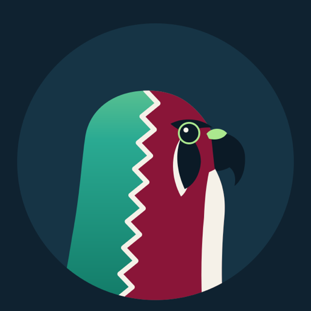
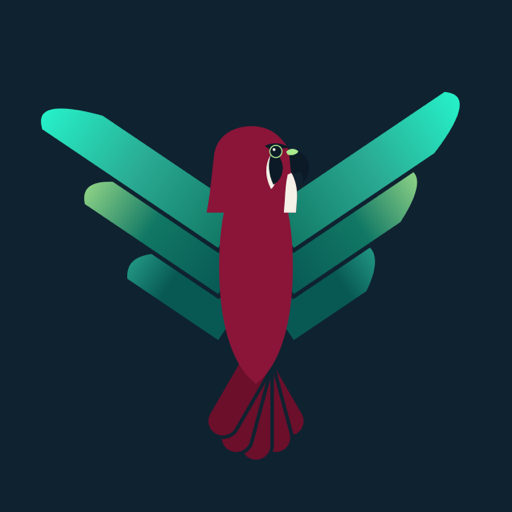
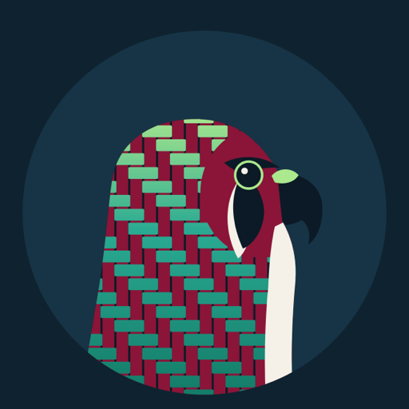

Home / Community
Fabric Falcons
A WhatsApp community for Microsoft Fabric. Five short posts a day, on two levels: Baseline and Advanced.
Dr. Estera Kot founded Fabric Falcons in October 2026 for people who want to learn Microsoft Fabric in the time it takes to read a message. Most members already use WhatsApp, so the learning comes to them there. There is no new app, no login, and no feed to chase. Each post carries one Fabric idea: a 15-second GIF you read, or a one-minute talk with a voice and subtitles. You watch it and move on with your day.
How to join
Scan the code with your phone camera, or tap the link on a phone with WhatsApp installed.
Join Fabric Falcons on WhatsAppAfter joining the community, open the group that matches your level: Fabric Baseline, Fabric Advanced, or both. Announcements reach everyone automatically.
Membership is free. Posts are published under Dr. Kot's name and every technical claim is checked against Microsoft Learn documentation before it goes out.
What you get
Every publishing day, five posts explain one Microsoft Fabric topic each: animated GIFs and short narrated talks. Each level has its own group inside the community. Posts go out Sunday to Thursday at Doha daytime hours, never on Fridays, Saturdays, or Qatar public holidays.
| Level | Group | Who it is for | Example topics |
|---|---|---|---|
| L1 | Fabric Baseline | New to Fabric: analysts, managers, students, teams moving from Power BI or Azure Synapse | OneLake, workspaces, lakehouse vs. warehouse, capacities |
| L2 | Fabric Advanced | Hands-on builders: data engineers, architects, platform owners | Spark tuning, Native Execution Engine, Eventhouse and KQL, Real-Time Intelligence, Fabric IQ and ontology |
| L0 | Announcements | Everyone | FabCon, Fabric certifications and Applied Skills, new modules, topic votes |
Recurring themes
- Teaching modules of five lessons each, built from Microsoft Learn and checked against it.
- Narrated talks from Dr. Kot's sessions, including her Doha session on Real-Time Intelligence and Fabric IQ, taught with diagrams, charts, tables, and KQL.
- Evergreen posts: what FabCon is, the two Fabric certifications and four Applied Skills, four falcon habits for Fabric meetings, and topic votes where members pick what comes next.
The three falcons
Each feed carries its own falcon. All three fuse the falcon of Qatar with the Microsoft Fabric mark, in Qatar maroon and Fabric green, hand-built as vector art.



Why falcons
Falconry is a living heritage across the Gulf, where Clouds on Mars is growing. A falcon is fast, precise, and sees the whole field from above. Those are the traits every post is meant to teach.
Who runs it
Dr. Estera Kot is a Microsoft MVP focused on Fabric Real-Time Intelligence and Fabric IQ, a former Principal Product Manager in the Microsoft Fabric product group where she owned the Apache Spark runtime and created the Native Execution Engine, and CTO at Clouds on Mars, a Microsoft partner for data and AI growing across the Gulf region. She also hosts Fabric Espresso and wrote the Microsoft Fabric implementation guide on this site.
Questions
What is Fabric Falcons?
A WhatsApp community for learning Microsoft Fabric, run by Dr. Estera Kot. Members receive five short posts a day, each explaining one Fabric idea as a 15-second GIF or a one-minute narrated talk with subtitles.
How do I join?
Open the join link on a phone with WhatsApp, or scan the QR code above. Then pick Fabric Baseline, Fabric Advanced, or both.
Baseline or Advanced?
Baseline if you are new to Fabric or moving from Power BI or Synapse. Advanced if you build on Fabric every day. Both is fine.
Is it free?
Yes.
When are posts published?
Five a day per group, Sunday to Thursday, at Doha daytime slots. Nothing on Fridays, Saturdays, or Qatar public holidays.